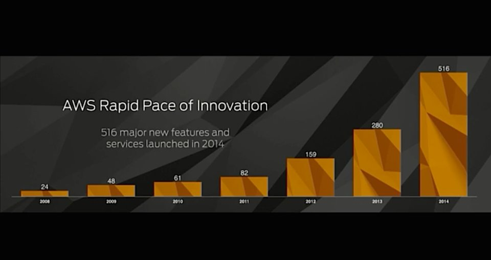

Security and Compliance in Government Clouds
Andrew Pawloski
July 16th, 2019
Government cybersecurity is simple.
NIST 800-53 Controls Guide:
- Who can access the system (and how)
- What events are stored and audited
- How data is encrypted at rest and in transit
Conventional Deployments
- Predictable hardware lifecycle
- Consistent network footprint
- Vertical operational needs
Slow changes to infrastructure.
Rapid deployment of code.
Rapid changes throughout the stack.
Major infrastructure changes can occur within a single development ticket.
Different services are secured in different ways.


We need a security approach that maps to the speed and complexity of the cloud.
Core features of cloud cybersecurity
- Adaptive monitoring
- Well-definied verification criteria
- Easy-to-invoke change processes
Expect and support rapid changes.
Rapid Monitoring
What questions do I want to ask at a given time?
Rapid Monitoring
Verification Criteria
How can I certify that this system is secure?
Verification Criteria
Change Management
How do I support new features, services, and patterns?
Change Management
Work in the cloud isn't slowing down. It's accelerating.
We need to update our compliance methodologies to support it.
Thank you.
Andrew Pawloski
andrew@element84.com
https://apawl.com/talks/esip_s19.html